| |
|
TOPOGRAFİK KARNE
|
Bu araç, arazi takeometrik karnelerinden gelen dosyaları yüklemek için yardımcı programlar içeren bir veri menüsünü ekranda görüntüler. Bu dosyalar aplikasyon için nirengi noktaları, karne tarafından zaten hesaplanmış noktalar veya kutupsal alım ve bir topografik/jeodezik poligon güzergahı hesaplamak için yatay açı, düşey açı ve mesafe ölçümlerini içerebilir. Sistem sadece düz dürbün (I. dürbün durumu) ölçümlerini veya hem düz hem de ters dürbün (I. ve II. dürbün durumu) ölçümlerini kabul eder. Hesaplama sırasında, nirengi noktaları ve diğer noktalar, hata tespitine yardımcı olmak için harita üzerinde veya harita olmadan konumlarında ekranda görülebilir.
 C1, C2, C3 kutucukları aracılığıyla işin tanımına yönelik farklı gözlemler yazabiliriz ve bunlar sonuç listelerinde yansıtılacaktır. Herhangi bir metin yazılmaması durumunda ISTRAM/ISPOL bu alanları sırasıyla "PROJE", "İŞ" ve "GÜZERGAH" ile dolduracaktır. EKSEN kutucuğu aracılığıyla eksen numarasını belirtiriz; eğer kutupsal alım enkesitleri temsil ediyorsa, hangi eksene ait olduklarını bilmek için. Tip:
Sistem, kendi formatını ve farklı karnelerden ve programlardan gelen bazı diğer formatları tanır:
İstasyon Gözlenen Nokta Yatay Açı Düşey Açı Eğik Mesafe Reflektör Yüksekliği Alet Yüksekliği
Giriş dosyaları, formatlarından bağımsız olarak .ltp uzantısına sahip olmalıdır.
Orijinal dosya, Leica programları aracılığıyla .lea formatına dönüştürülen bir .gsi dosyasıdır. Bu aşamada uzantısı .ltp olarak yeniden adlandırılır ve artık Istram'dan yüklenebilir. Kabul edilen formatın bir örneği aşağıdadır: 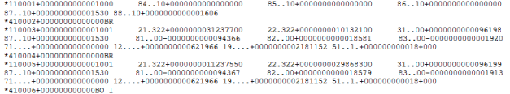
Bu format türünde, *11 ile başlayan satır istasyon kurulumudur: devamında 87 reflektör yüksekliği ve 88 alet yüksekliği gelir. Geri kalanı *41 ve *11 satır çiftleridir: ilki gözlenen noktanın kodunu verir ve *11 ölçümü verir; eğer kod BR ise ölçüm yöneltme içindir ve dürbün durumu değiştirilerek ve birden fazla farklı nirengiye tekrarlar olabilir. Diğer gözlemler kutupsal alım noktalarıdır. Bir istasyondan yapılan ölçümlerin sonunda, aletin hareket etmediğini kontrol etmek için nirengilere yeni gözlemler olabilir. Eğer önünde *41 olmadan bir *11 bulunursa, bu bir istasyon değişikliğidir ve yeni bir döngü başlar. Trimble karne formatı (total station Trimble 5603dr standard): .dc uzantılıdır ve .ltp uzantısına yeniden adlandırılması gerekecektir. .dc formatının bir örneği aşağıdadır: 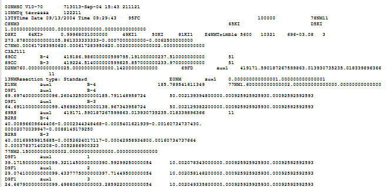
 kutucuğu aracılığıyla veriler sıfırlanır. kutucuğu aracılığıyla veriler sıfırlanır.Dosyalar Topografik karne ekran menüsü sekmelerle ve üç bölgeye ayrılmıştır. Üstte işin başlık ve tanım verileri ile en önemli işlem tuşları bulunur. Altında ise iki tane daha: biri nirengiler için, üzerinde işlem yapılmadığında gizlenir ve diğeri ölçümler ve hesaplama sonuçları için. Menünün üst kısmı, her an seçili olan sekmeye göre değişir. 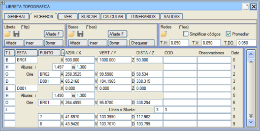
S.T., İST, NOKTA kutucuklarına tıklayarak karnemizde bulunan belirli bir veriyi bulabiliriz. Nirengi tablosu, her nirengi için bir satırdan oluşur ve şunları içerir: 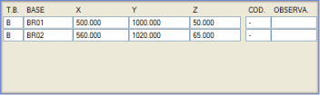
Nirengi Tipi N.T. Aşağıdaki anlamlara gelen tek bir karakter belirteceğiz:
X Y Z: Nirenginin üç koordinatı, metre cinsinden. KOD: Tanımlama veya sınıflandırma için en fazla 4 karakterli bir kod. AÇIKLAMA: Gözlemler, en fazla 15 karakterli bir cümle. .bas ve .ltp dosyalarını Dosyalar->Ağlar  sekmesinden yüklediğimizde, bir istasyonun koordinatlarını geriden kestirme ile hesaplamak ve ardından oradan kutupsal alım yapmak için Güzergahlar sekmesine erişim imkanı aktif hale gelir. sekmesinden yüklediğimizde, bir istasyonun koordinatlarını geriden kestirme ile hesaplamak ve ardından oradan kutupsal alım yapmak için Güzergahlar sekmesine erişim imkanı aktif hale gelir.İstasyon ölçümü "N" olarak kodlanmalı ve yaklaşık koordinatlara sahip olmalıdır. (Nirengiler arasında yer almamalıdır). Bilinen nirengilere yapılan ölçümler "O" olarak kodlanmalıdır, en az iki tane gereklidir. 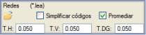 .ltp veya .lea uzantılı ölçüm dosyalarını yüklemeye izin verilir ve bu dosyalarda boş satırlara izin verilir. Nirengi dosyası ile istasyon ve gözlenen nokta adları arasında hiçbir eşleşme bulunmazsa, bir uyarı mesajı görüntülenir. Ortalama Al kutucuğu etkinleştirildiğinde, bir nirengi ile aynı nokta arasındaki çoklu ölçümlerin ortalaması alınır. Ortalama alınırken herhangi bir değer izin verilen maksimum hata sınırlarını aşarsa, ortalama hesaplamasının tam bir raporu gösterilir. Ağı bu şekilde hesaplarken, hesaplamalar çok daha hızlıdır, ancak ağ dengeleme sürecini iptal etmeye olanak tanıyan bir ilerleme çubuğu eklenir. Görünüm Nirengi listesini görüntüleyebilmek için Görünüm sekmesindeki Nirengiler kutucuğunun işaretli olması gerekir. 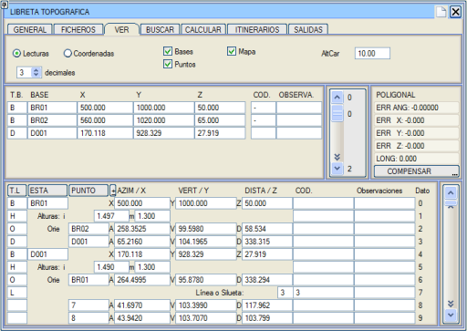
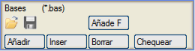Dosyalar sekmesinden nirengilerle işlem yapabiliriz.
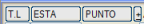Ölçümler için dört aktif tuşumuz var.
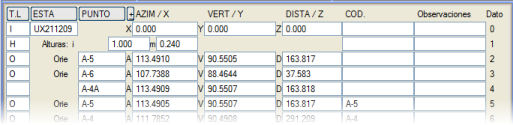
Tüm bu satırlara, karnenin yorumlanmasına yardımcı olmak veya yorum olarak en fazla 4 karakterli bir kod ve en fazla 15 karakterli bir gözlem alanı eşlik edebilir. Bu sekme içinde şunları ayırt edeceğiz: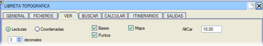
Bul 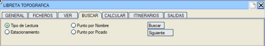
Bu sekme, aşağıdaki arama kriterlerinden birini belirterek tabloda bir ölçümü aramayı sağlar: 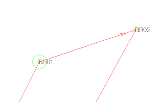
Tablonun başındaki nokta, üzerinde bulunduğumuz verinin çizimdeki yerini belirtmek için çizimde sabit boyutlu yeşil bir poligonla işaretlenir. Hesapla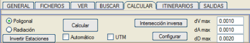
Yapılandırma → Koordinat Referans Sistemi menüsünden eriştiğimiz U.T.M. menüsünde, hesaplamalarda kullanılacak dengelemeler tanımlanır, ayrıca Yapılandır aracılığıyla da erişilebilir. Sadece UTM'de hesaplamayı seçmek için UTM kutucuğu işaretlenebilir.
Hesaplayıcı, triseksiyonu hesaplamak için G'den sonraki ilk üç bilinen nirengi ölçümünü O kullanacaktır. Tekrar varsa ortalamasını alacaktır. Poligon ve kutupsal alım hesaplaması, G geriden kestirmelerinin olup olmadığını kontrol ederek başlar ve poligonu veya kutupsal alımı elde etmeden önce bunları çözer.
Güzergahlar 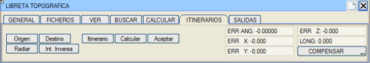
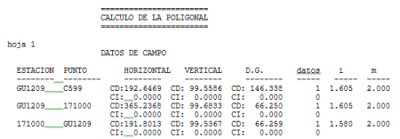
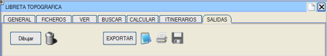
.per: Nokta bulutundan veya enkesitlere atanan nokta serilerinden bir enkesit dosyası elde etme.
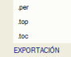Bunu oluşturmak için, sistem bir eksen boyunca (tipik olarak her 20 m'de bir) bir dizi nokta hesapladığımızda oluşturulan .TRC formatındaki dosyalardan birini seçmenizi isteyecektir. O .TRC dosyasından her enkesitin merkezinin koordinatlarını ve o noktadaki eksenin azimutunu alır. Bir enkesit toleransı ve bir boyuna tolerans ister ve her tolerans dikdörtgeni içindeki noktaları inceleyerek, seçilen noktaları enkesit üzerine yansıtarak, eksene olan mesafe ve kot cinsinden bir enkesit oluşturur. Veri noktalarının enkesitlerde gruplandırılmasını yoksaymayı (Tekil Noktalar) veya bunu sıkı bir şekilde dikkate almayı seçebilirsiniz. Bu enkesitler daha sonra işin inşası sırasında ölçüm veya takip için kullanılabilir. .top: Hesaplanan nokta bulutu ile, arazi karnesinde veya burada işlem sırasında bildirilen zincirler ve profiller dahil olmak üzere .top dosyalarının oluşturulması; daha sonra üçgenleme ve eşyükselti eğrileri oluşturma veya genel olarak bir topografik harita için işlenmek üzere. Bu topografik harita, eşyükselti eğrileri dahil, ISTRAM®/ISPOL®'ün diğer alanlarında istediğimiz noktalarda yüzey profillerini elde etmek için ikinci bir yol olabilir.
Bu seçenekten bir .top dosyası kaydedildiğinde, karnenin KOD. (kodlar) ve Gözlemler sütunları, dosyanın yorumlar sütununa eklenir. .toc: Hesaplanan nokta bulutu ile, önceki paragrafta açıklanana paralel olarak .toc dosyalarının oluşturulması. Bu seçenekten bir .toc dosyası kaydedildiğinde, karnenin KOD (kodlar) ve Gözlemler sütunları, dosyanın yorumlar sütununa eklenir.
poli.res. Poligon hesaplamasının ara verileri.
Listele: Bu listeyi yazıcıya göndermek için ISIMPRIM adlı kütüphane dosyasında not edilen bir komutu kullanır.
Yazdır: Bu listeyi yazıcıya göndermek için ISIMPRIM adlı kütüphane dosyasında not edilen bir komutu kullanır.
Kaydet: Bir dosya adı sorar, .lst önerir ancak herhangi bir dosya olabilir, ltop.res dosyasının otomatik olarak üzerine yazılmasını önlemek için yeniden adlandırmak üzere.
Poligon artı Hesapla: Topografik karnede yansıtılan bir poligonun hesaplanmasını emreder. Bir poligonun hesaplanması için karnenin hazırlanma metodolojisi aşağıdaki gibidir: Öncelikle, bilinen nirengilere yapılan ölçümlere sahip istasyonları çözer ve bunları [G] anahtarıyla, geriden kestirme ile hesaplanmış olarak nirengi listesine geçirir. Karnenin ilk satırı, poligonun ilk istasyon nirengisidir, koordinatları bilinir ve nirengi dosyasında olması tavsiye edilir. Sonraki satırlar, ya açısal sapma ya da referans nirengilerine yapılan ölçüm olabilir (bir poligon iki nirengiye yönelterek başlayabilir), böylece program başlangıçtaki açısal sapmayı hesaplar. Eğer CD (Düz Dürbün) ve CI (Ters Dürbün) ölçümlerimiz varsa, program ortalama ölçümü hesaplayacaktır. Dürbünün sağa ve sola çevrilerek veya tek bir pozisyonda birden fazla ölçüm yapılabilir. Program, her daire pozisyonundaki ölçümleri önceden ortalamasını alır. Eğer bir ölçüm sadece Yatay Açıya sahipse ve diğerleri tam ise (Yatay, Düşey, Eğik Mesafe), sadece tam ölçümler kullanılır. Ardından, ilgili kutucuklara alet yüksekliğini ve prizma yüksekliğini yansıtırız. Başlangıç özellikleri dikkate alındıktan sonra, poligonun ikinci istasyonuna ve koordinatlarını elde edeceğimiz ilk istasyona yapılan ölçümü not etmek için bir "H" (hesaplanan) tipi satır ekleriz. Bu şekilde, tüm başlangıç notlarını tamamlamış oluruz.Ardından, ikinci istasyonu belirtmek için bir "İ" tipi satır ekleriz (normalde önceki ölçümlerde verilen "hesaplanan" olacaktır). İstasyon, alet ve reflektör yükseklikleri, önceki istasyona yöneltme (O) ve poligonun bir sonraki istasyonuna hesaplanan nokta (H) ile tamamlanır. Eğer poligonun bir noktasındaki bir istasyon kurulumu bir sonraki noktaya yapılan ölçümle tamamlanmaz ve aynı noktada yeniden istasyon kurulursa, eksik istasyon kurulumu atılır. Bu şekilde, kapanış istasyonuna ulaşana kadar karnede notlar almaya devam ederiz. Buradan itibaren iki şekilde çalışılabilir. Eğer poligon, açısal kapanma hatası dikkate alınarak gözlemlenmişse, yani son bilinen koordinatlı nirengiden, koordinatları yine bilinen başka bir nirengiye gözlem yaptığımızı varsayarsak, işimizin açısal kapanma hatasını hesaplayabiliriz ve dolayısıyla bu ölçümler bir "C" tipi satırda yansıtılmalıdır. Eğer açısal kapanma hatasını elde etmemiz gerekmiyorsa, bu son gözlemi yapmaya gerek yoktur ve dolayısıyla karnede gerekli olan son notlar, koordinatlarını hesaplamak istediğimiz poligonun sondan bir önceki nirengisi ile poligonun kapanışını yapacağımız, ancak istasyon kurmanın gerekli olmayacağı, koordinatları bilinen son nirengi arasındaki ölçümler olacaktır. Eğer son gözlem, koordinatları bilinmeyen bir noktaya veya nirengiye yapılırsa, poligonu kapatamayız ve dengeleyemeyiz, bu da poligonun açık kalmasına ve bir hesaplanan noktalar zinciri olarak hesaplanmasına neden olur. Program, bir "C" okuduktan sonra bir "N" veya "İ" ile karşılaşırsa, poligon veri girişinin bittiğini varsayar. Bu şekilde, bir dosyada birden fazla poligon verisi gelirse, her zaman ilkini hesaplar. Kapalı poligonlarda, son noktanın Kapanış görselleri poligonun başladığı nirengiye doğruysa, program bu nirengiden son noktaya yapılan karşılıklı görselleri arar, bu görseller o ilk istasyon kurulumunda yapılmıştır ve hiçbir kod taşımamalıdır. Yapılacak hesaplama modu, Yapılandırma > Koordinat referans sistemi menüsünden, U.T.M. seçeneğinde yapılandırılır; burada programa düzlem koordinatlarında mı yoksa U.T.M. koordinatlarında mı hesaplama yapmak istediğimizi ve kullanılacak dengeleme yöntemini söyleriz. Bu yapılandırmaya Yapılandır butonundan da erişilebilir. U.T.M. kutucuğu, yalnızca U.T.M. koordinatlarında hesaplamayı işaretlemek için bir kısayoldur. Program, poli.res ve poligo.res adında hesaplama listeleri oluşturur; burada arazi verileri ve dengelemeye kadar tüm hesaplamalar ve U.T.M. projeksiyonunda hesaplama istenmesi durumunda anamorfoz katsayıları yansıtılır. Aşağıda, bir poligonun hesaplanması için tipik bir topografik karne örneği detaylandırılmıştır. 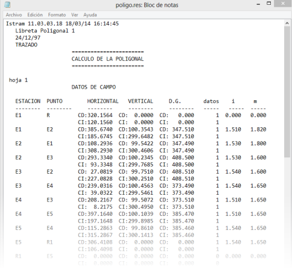
İstasyonlarda kutupsal alımları olan bir poligonumuz varsa, hesaplama yöntemi önce Poligon seçeneği seçiliyken Hesapla'ya basmak ve ardından Kutupsal Alım seçeneği seçiliyken Hesapla'ya basmaktan oluşur. N adet poligon hesaplamak mümkündür. "DEMO" dizininde örnek olarak çeşitli formatlarda topografik karne örnekleri bulunmaktadır. Topografik karne ile bir poligon ağı hesaplama 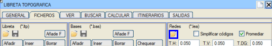
Ağın yüklenmesi : Öncelikle, Yapılandırma > Koordinat referans sistemi menüsünden, U.T.M. seçeneğinde hesaplama seçeneklerini seçmeyi unutmamalısınız; burada programa düzlem koordinatlarında mı yoksa U.T.M. koordinatlarında mı hesaplama yapmak istediğimizi ve kullanılacak dengeleme yöntemini söyleriz. Yükle : Şu anda yüklü olan nirengileri ve ölçümleri siler ve nirengi dosyası .bas ile ölçüm dosyası .ltp'yi ister. Ölçüm dosyasının formatı .lea formatı olmalıdır, ancak uzantısı .ltp'ye yeniden adlandırılmış olmalıdır.Veriler yüklendikten sonra, başlangıçta hesaplanan yaklaşık koordinatlarla ağın bir şeması gösterilir. Bu anda sadece sabit nirengiler etiketlenir ve görseller çizilir, böylece başlangıçta görsel bir kontrol yapılabilir. Ağın yüklenmesi sürecinde aşağıdaki filtreleme gerçekleşir:
Kodları basitleştir: Eğer bu kutucuk işaretlenirse:
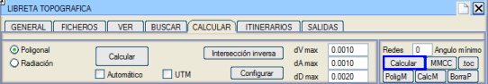
Ağlarla çalışmak için komutlar: Bir poligon veya güzergah ağı, En Küçük Kareler Yöntemi ile bütünüyle dengelenir. Önce planimetrik bir dengeleme, sonra da altimetrik bir dengeleme yapılır. Süreç, dengeleme sonucunu içeren listenin gösterilmesiyle sona erer. Hesapla:Poligon veya güzergah ağı, En Küçük Kareler Yöntemi ile dengelenir. En Küçük Kareler algoritmasının başlangıç noktası olarak hizmet edecek olan her noktanın başlangıçtaki yaklaşık koordinatlarını elde etmek için, bilinen koordinatlı nirengilere dayalı ve referanslı poligonlar elde etmek amacıyla hiyerarşik kriterleri izleyerek otomatik olarak poligonlar oluşturulur. Öncelikle, sabit bir nirengiden başlayan, başka bir sabit nirengiye yönelen; ve sabit bir nirengide istasyon kurarak ve başka bir sabit nirengiye kapanarak biten tüm poligonlar oluşturulur.Önceki seviyeden daha fazla poligon bulunamadığında, sabit bir nirengide başlayan, önceki bir poligonla koordinatları olan bir noktaya yönelen ve başka bir sabit nirengiye kapanarak biten poligonlar oluşturulur. Eğer önceki kategori biterse, sabit nirengide başlayan, önceki bir poligonla hesaplanmış koordinatları olan bir noktaya yönelen ve sabit bir nirengide istasyon kurarak ve başka bir sabite kapanarak biten poligonlar oluşturulmaya çalışılır. Bu anda karne, ağın ölçümleri yerine otomatik olarak oluşturulan ISTRAM®/ISPOL® poligonlarını içerir. Bu poligonlar da otomatik olarak hesaplanır. Çalışma dizininde, karnede bulunan ve zaten hesaplanmış olan poligon sayısı kadar redpolig<sayı>.res dosyası oluşturulmuştur. Bu dosyalar, poligonun tüm hesaplamalarını içeren bir liste sağlar.Poligonlar aracılığıyla hesaplanan yaklaşık koordinatlarla, ağın En Küçük Kareler yöntemiyle hesaplanmasına geçilir; önce planimetrik bir dengeleme ve ardından altimetrik bir dengeleme yapılır. Ağ hesaplama süreci bittiğinde, algoritmanın genel yapılandırma verilerini içeren bir özet; kullanılan düzeltmeler, elipsoid ve zon; orijinal ve düzeltilmiş mesafe, azimut ve açı gözlemleri; orijinal ve düzeltilmiş kot farkı gözlemleri; algoritmanın yakınsaması hakkında bilgi ve nihai koordinatların listesini içeren ayrıntılı bir rapor (mmcc.txt) gösterilir.Ağın grafik gösterimi, istasyonlardan ve aralarındaki ölçümlerden oluşur. Ölçümlerin uçlarında, yönü belirtmek için bir ok ucu çizilir ve rengi ölçüm türünü belirtir; kırmızı gidiş ölçümü, sarı ise gidiş ve dönüş ölçümüdür. Bir poligon kesişimine yakınlaştırma yapıldığında, koordinatları birden fazla poligon tarafından hesaplanmış olan noktaların, her bir poligon tarafından elde edilen sonuçlarla birlikte eflatun işaretler gösterdiği görülebilir. Ayrıca, başlangıçta hesaplanan yaklaşık koordinatlara karşılık gelen koyu mavi bir işaret de çizilir. Ölçüm tablosunun başındaki nokta, üzerinde bulunduğumuz verinin çizimdeki yerini belirtmek için çizimde sabit boyutlu yeşil bir poligonla işaretlenir.Ağ hesaplaması yapıldıktan sonra her noktadan geçebilecek maksimum güzergah (poligon) sayısı 500'dür. Karşılıklı istasyon kurulumu olmadan kutupsal alımla ölçülen hesaplanan noktalara yapılan ölçümlerle ağların hesaplanması dahil edilmiştir. Hesaplama aşağıdaki sırayla yapılır: 1) Yüklemede ve isteğe bağlı olarak, tekrarlanan ve düz ile ters dürbün durumlarıyla yapılan ölçümlerin ortalaması alınabilir. 2) Tüm noktaların yaklaşık koordinatlarının kutupsal alımla ilk hesaplaması yapılır. 3) Bağımsız poligonlar oluşturan güzergahlar aranır. 4) Bu poligonlar dengelenir, böylece aynı nokta için birkaç farklı koordinat seti elde edilebilir. 5) Tüm ağ, en küçük kareler yöntemiyle küresel olarak dengelenir. 6) Hesaplanan noktalar, zaten dengelenmiş istasyonlardan hesaplanır. 7) Bu noktalar dahil olmak üzere tüm ağ, tekrar küresel olarak dengelenir. Sonuçlar:
Bu liste dört ondalık basamakla elde edilir.
PoligM, HesapM, SilP, (manuel poligon, manuel hesaplama, poligonu sil) başlangıç ve bitiş istasyonlarına tıklayarak manuel olarak poligonlar oluşturmaya, bu poligonları hesaplamaya veya silmeye olanak tanır. |
 : Şu anda yüklü olan nirengileri .bas uzantılı bir dosyaya yazar. Eğer hesaplamadan sonra tabloya S (İstasyon) tipi nirengiler eklendiyse, kaydederken bunları N (Nirengi) tipine dönüştürüp dönüştürmeyeceğini veya S olarak mı kaydedeceğini sorar.
: Şu anda yüklü olan nirengileri .bas uzantılı bir dosyaya yazar. Eğer hesaplamadan sonra tabloya S (İstasyon) tipi nirengiler eklendiyse, kaydederken bunları N (Nirengi) tipine dönüştürüp dönüştürmeyeceğini veya S olarak mı kaydedeceğini sorar. : Son "Çizime Aktar" komutuyla üretilen çizimi siler.
: Son "Çizime Aktar" komutuyla üretilen çizimi siler. /
/  /
/